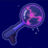
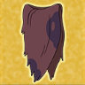

|
Grape Juice Sword An enchanted blade capable of destroying Kee'Oth, maybe? |
|
|  |
Electrode Gun Princess Bubblegum created this tasty bit of technology to rapidly ZAP her foes! |
|  |
Billy's Loincloth Armor yourself in the most basic gear of the most legendary hero! |
|
Bubblegum's T-Shirt T-Shirt gifted to the Candy Kingdom Monarch from the Vampire Queen of Rock |
|

|
Googoomamameter A device that gauges the amount of "witchery" in an area |